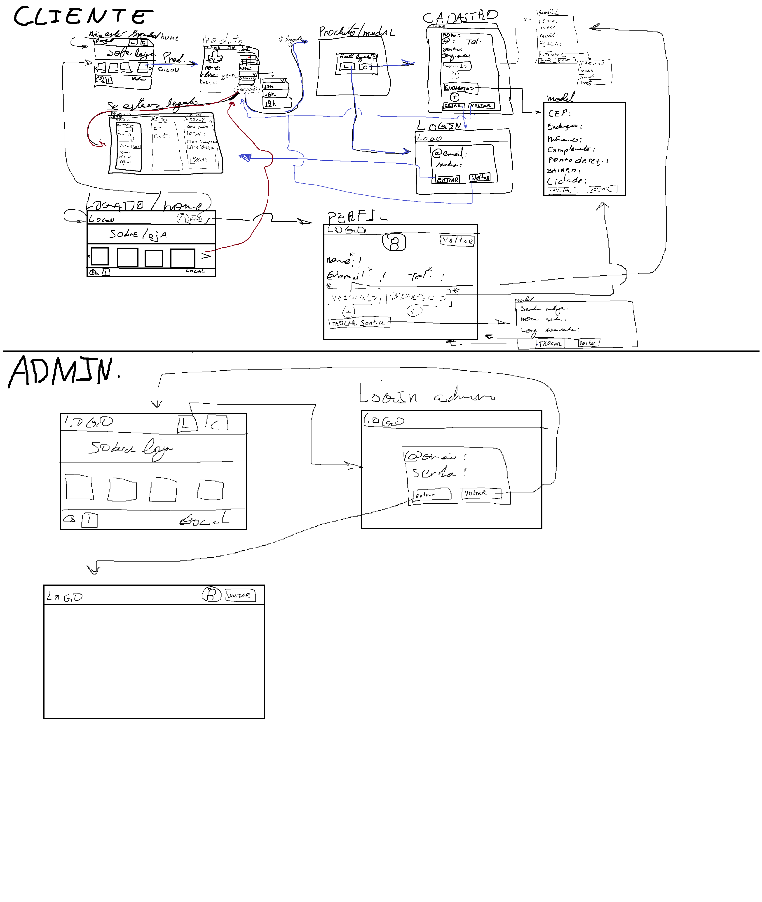
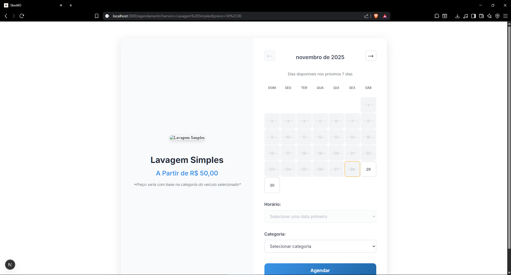
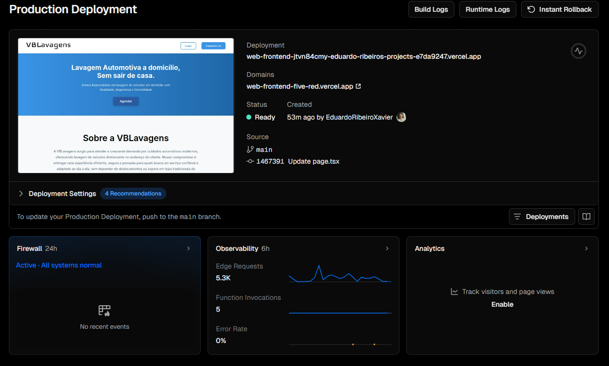

Evidências de Execução
Este documento consolida as evidências de execução do cronograma, do processo (ESW e ER) e das entregas parciais do produto até o momento.
1. Cronograma e Marcos
| Unidade/Ciclo | Período (planejado) | Evidências | Links |
|---|---|---|---|
| Unidade 1 | 26/08–06/09 (fase inicial) | Definição de escopo, políticas e visão do produto | Cenário Atual • Solução Proposta • Política de Commits • Política de Branches • Política de Issues • Política de PR |
| Fase 1: Planejamento Global | 26/08–06/09 | Escopo total, definição de MVP e divisão em incrementos | Solução Proposta • Requisitos de Software |
| Fase 1.1: Planejamento Requisitos (Inc.1) | 09/09–25/11 | Refinamento de requisitos do Incremento 1 (MVP) | Requisitos de Software • Backlog |
| Fase 1.2: Design & Prototipagem (Inc.1) | 03/11–25/11 | Protótipos e validação com cliente para MVP | Protótipos |
| Fase 1.3: Construção Rápida (Inc.1) | 26/11–02/12 | Implementação e integração das funcionalidades do MVP | Evidências de Execução |
| Fase 1.4: Finalização & Implantação (Inc.1) | 02/12 | Testes, correções e entrega funcional do MVP | Evidências de Execução |
| Fase 2.1: Planejamento Requisitos (Inc.2) | 02/12–02/01 | Planejamento de melhorias e itens fora do MVP | Backlog |
| Fase 2.2: Design & Prototipagem (Inc.2) | 02/01–02/02 | Design das funcionalidades finais | (Previsto) |
| Fase 2.3: Construção Rápida (Inc.2) | 02/02–02/05 | Codificação e integração total | (Previsto) |
| Fase 2.4: Finalização & Implantação (Inc.2) | 02/05–02/06 | Testes finais, ajustes e entrega completa | (Previsto) |
Referência do planejamento completo: Cronograma de Entregas.
2. Processo (ESW e ER)
- Engenharia de Requisitos (ER):
- USM descrito e referenciado (transversal ao processo) em Engenharia de Requisitos.
- Backlog derivado do USM com features, US e priorização em Backlog de Produto.
- RNFs documentados e validados em Requisitos de Software.
- Engenharia de Software (ESW):
- Políticas de equipe (Commits, Branches, Issues, Pull Request), estratégia (Estratégias), e organização das entregas (Cronograma).
3. Entregas Parciais do Produto
| Tipo | Evidência | Link |
|---|---|---|
| Mapa USM (visual) | Miro com jornadas e histórias | Requisitos de Software |
| Backlog estruturado | Features, US e priorização | Backlog de Produto |
| RNFs do sistema | Tabela completa com categorias | Requisitos de Software |
Protótipos e Mockups
Baixa fidelidade (cliente/admin)

Alta fidelidade (Figma)
Aplicação inicial do código
As imagens abaixo evidenciam a primeira aplicação do código e como ficaram algumas telas do protótipo inicial:




Versão Final (capturas atualizadas)
As imagens abaixo registram a versão final do protótipo/aplicação com telas-chave. Formato visual igual às demais evidências do documento.
Cobertura do MVP (Tabela Unificada)
| Tela | Função evidenciada | RF(s) | US(s) |
|---|---|---|---|
| Home | Visualização inicial dos serviços e navegação básica | RF-C01 | US-C01 |
| Serviços | Catálogo de serviços e preços | RF-C01 | US-C01 |
| Cadastro | Criação de conta de cliente | RF-C03 | US-C04 |
| Login (Cliente/Admin) | Autenticação e acesso administrativo | RF-C04, RF-A01 | US-C04, US-A01 |
| Agendamento simples | Seleção de data/horário | RF-C02, RF-C05 | US-C03 |
| Agendamento completo | Confirmação do agendamento | RF-C02, RF-C05 | US-C03 |
| Pagamento (PIX) | Geração de código/QR PIX | RF-C06 | US-C06 |
| Admin – Serviços | CRUD e inativação de serviços | RF-A05 | US-A05 |
| Admin – Agendamentos | Visualizar/editar/cancelar (+ intervalo) | RF-A02 | US-A02 |
| Admin – Agenda | Visão diária/semanal consolidada | RF-A03 | US-A03 |
| Agendamentos (Cliente) | Cancelar e visualizar histórico | RF-C07, RF-C08 | US-C07, US-C05 |
Evidências detalhadas por tela

Link de requisito: RF-C01 | US: US-C01
Implementação: catálogo visível na Home, com navegação para serviços e preços.

Página informativa (sem RF funcional)
Implementação: explica proposta e apoio à navegação.

Link de requisito: RF-C03 | US: US-C04
Implementação: formulário simples com e-mail e senha (etapa pré-login).

Links de requisito: RF-C04 • RF-A01 | US: US-C04, US-A01
Implementação: autenticação de cliente e acesso ao painel admin.
Links de requisito: RF-C02 • RF-C05 | US: US-C03
Implementação: calendário com seleção de data/horário e início do fluxo de efetivar agendamento.
Links de requisito: RF-C02 • RF-C05 | US: US-C03
Implementação: confirmação do agendamento com resumo do serviço escolhido.


Link de requisito: RF-A05 | US: US-A05
Implementação: criação/edição/inativação de serviços com preço e duração.

Link de requisito: RF-A02 | US: US-A02
Implementação: visualizar/editar/cancelar agendamentos e aplicar regra de intervalo mínimo.

Link de requisito: RF-A03 | US: US-A03
Implementação: visão diária/semanal consolidada de agendamentos.

Links de requisito: RF-C07 • RF-C08 | US: US-C07, US-C05
Implementação: cancelar agendamento futuro e visualizar histórico/lista de agendamentos do cliente.
4. Mídias das Unidades
| Unidade | Evidência | Link |
|---|---|---|
| Unidade 1 | Vídeo de apresentação | Entregas das Unidades |
| Unidade 2 | Vídeo de apresentação | Entregas das Unidades |
| Unidade 3 | Feedback do Cliente | Entregas das Unidades |
| Unidade 3 | Feedback Final do Cliente | Entregas das Unidades |
| Unidade 3 | Vídeo de Apresentação | Entregas das Unidades |
5. Evidências Técnicas
Aqui resumimos, de forma direta, o que foi entregue no código. Destacamos os PRs de frontend e backend que amarram as telas e as regras de negócio. Os links abaixo apontam para as páginas públicas de PRs; conforme houver merges finais, podemos referenciar commits específicos para reforçar a rastreabilidade. A organização no GitHub está disponível em: WaveOn-Produto.
| PR | Escopo Técnico | RF/US Principais Impactados | Próximo Complemento |
|---|---|---|---|
| Frontend – PRs | Build final, organização componentes, fluxo completo de pagamento PIX, refinamento roteamento | RF-C01, RF-C02, RF-C05, RF-C06, RF-C07, RF-C08 / US-C01, US-C03, US-C06, US-C07 | Associar commits e diffs chave |
| Backend – PRs | Endpoints, regras de intervalo e cancelamento, autenticação, serviços, integração PIX, logging básico | RF-C02, RF-C05, RF-C07, RF-C08, RF-A01, RF-A02, RF-A03, RF-A05 / US-C03, US-C05, US-C07, US-A01, US-A02, US-A03, US-A05 | Documentar contratos de API e logs |
Detalhamento Visual dos PRs

Resumo técnico (PRs públicos)
Reúne ajustes finais de build e deploy, organização de componentes, integração do fluxo de pagamento PIX e refinamento da navegação entre Home, Serviços, Agendamento, Pagamento e Histórico. Conecta diretamente as telas evidenciadas no MVP e consolida a camada de apresentação.

Resumo técnico (PRs públicos)
Concentra endpoints de agendamento (criar, listar, cancelar), regra de intervalo mínimo, persistência de serviços e agendamentos, autenticação cliente/admin, integração PIX (geração de QR) e logging básico para auditoria. Dá suporte direto às regras funcionais mostradas nas telas e prepara terreno para evidências de RNFs.
Deploy & Observabilidade – Frontend (Vercel) 
Status de produção
Painel mostra última versão em produção (branch main) publicada com sucesso, sem eventos de firewall e taxa de erro 0%. Métricas iniciais de requisições de borda e invocações de funções indicam saúde do deploy. A aplicação está acessível em: web-frontend-five-red.vercel.app.

Evolução contínua
Sequência de deploys automáticos gerados por pushes para main, evidenciando integração contínua. Cada entrada lista commit e status, permitindo futura ligação com PRs e requisitos nas próximas iterações.